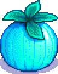
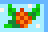
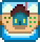

*거대 작물은 3 x 3 칸의 같은 작물이 모두 완전히 자란 상태일 때 낮은 확률로 생성됩니다.*

 성장 시간: 7일
성장 시간: 7일
 가격: 80g
가격: 80g
 계절: 봄
계절: 봄
*거대 작물은 3 x 3 칸의 같은 작물이 모두 완전히 자란 상태일 때 낮은 확률로 생성됩니다.*

 성장 시간: 11일
성장 시간: 11일
가격: 60g
 계절: 여름
계절: 여름
*거대 작물은 3 x 3 칸의 같은 작물이 모두 완전히 자란 상태일 때 낮은 확률로 생성됩니다.*

 성장 시간: 10일
성장 시간: 10일
가격: 90g
 계절: 가을
계절: 가을
*거대 작물은 3 x 3 칸의 같은 작물이 모두 완전히 자란 상태일 때 낮은 확률로 생성됩니다.*

 성장 시간: 14일
성장 시간: 14일
너구리상점에서 교환가능
 계절: 겨울
기본 농장
기본 농장 레이아웃은 넓은 개방된 공간을 제공합니다.

강변 농장
강변 농장은 많은 물과 낚시 기회를 제공합니다.
숲 농장
숲 농장은 더 많은 채집 가능 아이템과 재생 가능한 그루터기를 제공합니다.
언덕 농장
언덕 농장은 작은 채석장을 제공하여 광물에 쉽게 접근할 수 있습니다.
황야 농장
황야 농장은 밤에 더 많은 몬스터가 나타납니다.
×